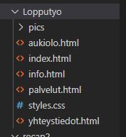
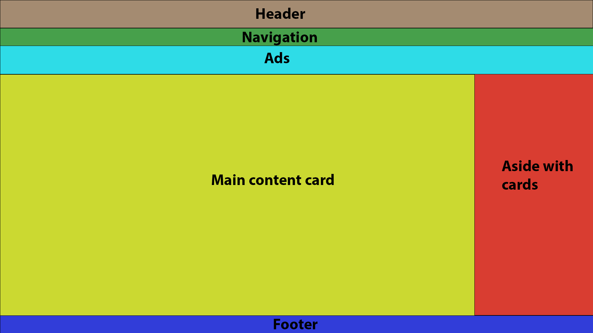
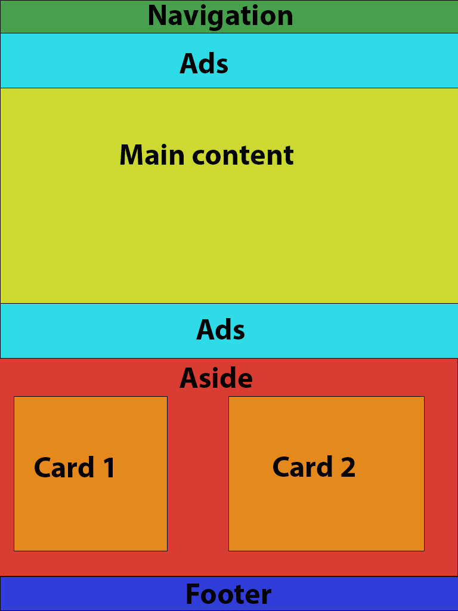
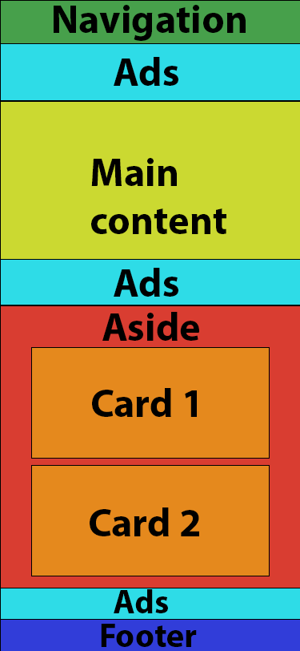

Verkkosivun speksejä
Testatut selaimet
- Mozilla Firefox v. 84.0.2 64-Bit
- Chrome v. 87.0.4280.141 64-Bit
Sivuston kansiorakenne
Sivusto on yhdessä kansiossa ja kuville on oma alikansionsa.
Sivuston layoutti
Työpöytä-kokoisella ruudulla käytetään multicolumn-layouttia.
Tabletti-layoutissa käytetään muokattua singlecolumn-layouttia. Pääsisältö on yksi kolumni ja sivukortit ovat kahdessa kolumnissa pääsisällön alla. Navigaatio on myös vaihtunut hampurilaisnavigaatioksi. Lisäksi yläpalkkiin mahtumattomia mainoksia on siirretty pääsisällön jälkeen.
Mobiililayoutissa siirrytään kokonaan singlecolumn-layouttiin, asiden kortitkin on nyt siirretty yhteen columniin.. Lisäksi viimeiset yläpalkkiin mahtumattomat mainokset on siirretty asiden ja footerin väliin. Layoutin toimivuus on testattu 375px leveyteen asti.
Linkit ulkoisiin juttuihin
- Käytin hampurilaismenun ikonin tekemiseen Font Awesomen kirjastoa.
- Käytin myös Adesile Emmanuelin ohjetta hampurilaismenun ikonin luomiseen.
- Lisäksi käytin Eric Meyer's Reset CSS v2.0 CSS resettiä.